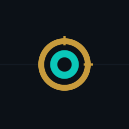

Android · 와일드리프트
한국어 티어표
한 앱에서
와일드리프트 라인별 챔피언 티어와 통계를 한국어로. 인게임 오버레이/ 자동 감지 기능은 다음 버전에서 정식 공개 예정.
APK 다운로드
v0.1.0 · 최신 Release
주요 기능
- 한국어 티어표 — 라인별 추천 카드 + 전체 표. lolm.qq.com 데이터 한국어화. WR 모드 cohort 탭 지원.
- 업데이트/뉴스 배너 — 새 릴리스 및 패치 노트 알림.
- 인게임 오버레이 (개발중) — 적 5명 스펠 쿨다운 수동 트래커. 다음 릴리스에서 활성화.
- 자동 채팅 OCR 감지 (개발중) — 적이 스펠 쓰면 채팅 메시지를 OCR로 잡아 자동 카운트다운.
- 전적/카운터 추천 (개발중) — 전적 저장 후 유저 챔피언 픽 평가 및 카운터 제안.
- OCR 영역 캘리브레이션 (개발중) — 다양한 해상도/ 크롭 비율에 맞춰 OCR 좌표 조정.
사용법
1
설치
APK 다운로드 후 폰에서 "출처 미상의 앱" 허용. Play Store 미배포.
2
티어 보기
앱 실행 → "티어 보기" 버튼. 라인 필터 + WR 모드 cohort 탭으로 메타 한눈에.
3
오버레이 / OCR (개발중)
"오버레이 시작"·"캡처"·"전적 보기"·"OCR 영역 설정"·"조합 보기"는 현재 "개발중입니다" 안내 후 비활성. 다음 릴리스에서 단계적으로 열립니다.
안전성 (FAQ)
메모리 후킹, 패킷 스니핑 하나요?
아니요. 게임 상태는 100% 사용자 수동 입력 기반으로 진행됩니다.
메모리/패킷에 손대지 않습니다.
안티치트(Vanguard)에 안전한가요?
단순 "화면 위 그림판" 수준의 오버레이라 안전합니다. 게임 프로세스에
접근하지 않습니다.
왜 Play Store에 없나요?
귀찮아서요
Ios는 안되나요?
Ios 오버레이는 정책상 못만들어요
오버레이/OCR은 언제 공개되나요?
현재 OCR 인식 정확도와 좌표 안정성을 다듬는 중입니다. 안정화되는 대로
단계적으로 활성화할 예정입니다.